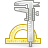
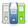
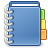

Welcome to RDTK’s documentation!¶
The Research Development Toolkit (RDTK) consists of tools and processes which help software engineers working on complex, heterogeneous, software-intensive systems in the following regards:
Continuous Integration (CI) and Deployment (onto diverse target platforms)
Reproducibility
Handling of dependencies
Documentation, cataloging, meta-data and re-use
In the Cluster of Excellence Cognitive Interactive Technology (CITEC) at Bielefeld University is used for internal projects as well as in cooperation with external partners. So far, 1,400 software projects and about 200 distributions have been modeled by more than 100 contributors.
Examples of distributions in the areas research and education whose requirements are met by the RDTK include an intelligent apartment, workbenches for domain-specific languages, service robots, etc. Many of these distributions are comprised of hundreds of projects from diverse domains such as machine learning, natural language understanding and synthesis, databases and system monitoring and are mainly developed and maintained by (PhD) students.
In contrast to other CI and DevOps solutions and services, the model-based approach employed in the RDTK is particularly suitable for heterogeneous systems combining divers project kinds, inclusion of 3rd-party elements and complex dependency structures.
Contents
|
What's new in RDTK ?
|
What is RDTK?
|
|
Installation
|
Troubleshooting
|
|
Support
|
Examples
|
|

Tools
|

Specification
|


Indices and tables:
|

General Index
|
Glossary
|